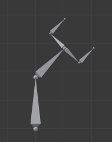
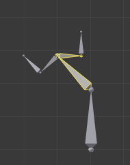

编辑¶
In Pose Mode, bones behave like objects. So the transform actions (move/rotate/scale, etc.) are very similar to the same ones in Object Mode (all available ones are regrouped in the submenu). However, there are some important specificities:
- 骨骼的关系至关重要（参见 Parenting 父子）。
- 给定的骨骼（即它的默认枢轴点，当它是唯一选择的骨骼时）的"变换中心" 是 其首端 。注意一些枢轴点选项似乎不能正常工作，实际上，除了 3D游标 之外，其它的似乎总是使用选择的中点（当 激活物体 被选中时，而不是例如激活骨骼的首端等）。
Basic Posing 基本姿势¶
如前面所述，骨骼的变换是根据骨架的 重置位置 执行的，也就是 编辑模式 中定义的状态。这意味着在 姿态模式 中，每个骨骼的缩放比例为1.0，零旋转和零位移(你可以在3D视图中按 N 在 变换 面板中看到)。

An example of locally-Y-axis locked rotation, with two bones selected.
此外，这些动作的局部空间是骨骼自己的空间（当您启用 Armature 面板的 Axes 选项时可见）。这在使用轴锁定时尤为重要，例如 姿势模式 中没有特定的“骨扭转”工具，因为你可以通过按 R Y Y 键锁定在局部Y轴上的方式围绕骨骼的主轴旋转... 这也适用于选定的几个骨骼; 每个骨骼都锁定到自己的局部轴！
当你给骨架摆姿势时，假定你用一个或多个物体蒙皮给它！显然，当你在 姿态模式 中转换骨骼时，其相关物体或物体的形状相应地跟着实时移动/变形。不幸的是，如果你有一个复杂的绑定设置和/或一个复杂的蒙皮物体，这可能会产生滞后，并让交互式编辑非常痛苦。如果遇到这种麻烦，请尝试启用 Armature 面板的 Delay Deform（延迟变形） 按钮，一旦应用了变换操作，蒙皮物体才会被更新。
Auto IK 自动IK¶
参考
| 模式: | 姿态模式 |
|---|---|
| 面板: |
The auto IK option in the Sidebar enables a temporary IK constraint when posing bones. The chain acts from the tip of the selected bone to root of the upper-most parent bone. Note that this mode lacks options, and only works by applying the resulting transform to the bones in the chain.
Clear Transform 清除变换¶
参考
| 模式: | 姿态模式 |
|---|---|
| 菜单: | |
| 快捷键: | Alt-G, Alt-R, Alt-S |
一旦你改变了一些骨骼，如果你想回到他们的重置位置，只要清除他们的变换。
- 位置，旋转，缩放 Alt-G, Alt-R, Alt-S
- 清除单个变换。
- All
- 立即清除所有内容。
- Reset Unkeyed 重置非关键帧
将变换清除转换到关键帧状态。这个操作也可以用 菜单项。
- Only Selected 仅选定
- 仅在所选骨骼或所有骨骼上操作。
请注意，在 封套（Envelope） 可视化中， Alt-S 不是清除缩放，而是缩放所选骨骼的 距离 影响区域（也可以通过： 菜单项，这仅在 封套（Envelope） 可视化中有效，即使它始终可用...）。
Apply 应用¶
参考
| 模式: | 姿态模式 |
|---|---|
| 菜单: | |
| 快捷键: | Ctrl-A |
- Pose as Rest Pose
- Conversely, you may define the current pose as the new rest pose (i.e. "apply" current transformations to the Edit Mode), When you do so, the skinned objects/geometry is also reset to its default, undeformed state, which generally means you will have to skin it again.
- Pose Selected as Rest Pose
- Same as Pose as Rest Pose but only applies to selected bones.
- Visual Transform to Pose
- TODO.
- Assign Custom Property Values as Default
- TODO.
In-Betweens 中间帧调整¶

In-Betweens Tools.
在动画中有几种编辑姿势的工具。
姿势模式 还有一堆骨架专用的编辑选项/工具，如 auto-bones naming ， properties switching/enabling/disabling 等等。我们已经在骨架编辑页面中描述过。看上面的链接...
Push Pose from Breakdown¶
参考
| 模式: | 姿态模式 |
|---|---|
| Tool: | |
| 菜单: | |
| 快捷键: | Ctrl-E |
Push Pose interpolates the current pose by making it closer to the next keyframed position.
Push Pose from Rest¶
参考
| 模式: | 姿态模式 |
|---|---|
| 菜单: |
Similar to Push Pose from Breakdown but interpolates the pose to the rest position instead. Only one keyframe is needed for this tool unlike two for the other.
Relax Pose to Breakdown¶
参考
| 模式: | 姿态模式 |
|---|---|
| Tool: | |
| 菜单: | |
| 快捷键: | Alt-E |
放缓姿态与上述主题有些相关，但它只适用于关键帧。当你编辑这样一个骨骼（并因此将其从“关键位置”移开）时，使用此工具将逐渐“回到”其“关键位置”，随着越来越近的时候步调会越来越小。
Relax Pose to Rest¶
参考
| 模式: | 姿态模式 |
|---|---|
| 菜单: |
Similar to Relax Pose to Breakdown but works to bring the pose back to the rest position instead. Only one keyframe is needed for this tool unlike two for the other.
Breakdowner 补间器¶
参考
| 模式: | 姿态模式 |
|---|---|
| 面板: | |
| 菜单: | |
| 快捷键: | LMB-drag |
在当前帧创建一个合适的补间姿态。
通过在工具处于活动状态时按下以下键，“分解程序（Breakdowner）”工具可以约束在特定变换和轴上工作：
- G, R, S: move, rotate, scale
- B: 软骨骼
- C: 自定义属性
- X, Y, Z: 对应轴向
Copy/Paste Pose¶
参考
| 模式: | 姿态模式 |
|---|---|
| 菜单: | , , |
| 快捷键: | Ctrl-C Ctrl-V Shift-Ctrl-V |
Blender allows you to copy and paste a pose, either through the Pose menu, or by using hotkeys.
- Copy Current Pose 复制当前姿势
- 将所选骨骼的当前姿势复制到姿势缓存。
- Paste Pose 粘贴姿势
- 将缓存的姿势粘贴到当前姿势的骨骼上。
- Paste X-Flipped Pose 粘贴X轴向翻转（姿势）动作
- 将 X轴镜像 缓存姿势粘贴到当前姿势的骨骼上。
以下是重点：
- 该工具在Blender会话阶段工作，这意味着你可以在电影，场景甚至文件中使用它。但是，姿势缓存不保存，所以当你关闭Blender时，你将丢失它。
- 只有一个姿势缓存。
- 在复制期间只考虑所选择的骨骼（即仅复制选定的骨骼姿势）。
- 另一方面，在粘贴过程中，骨骼的选择并不重要。复制的姿势是以每个名字为基础应用的（例如，如果你在复制姿势时选择了“前臂”骨骼，则当粘贴它时，当前姿势的骨骼会获得其姿势 - 如果没有这样的命名的骨骼，什么都不会发生...）。
- What is copied and pasted is in fact the position/rotation/scale of each bone, in its own space.
This means that the resulting pasted pose might be very different from the originally copied one, depending on:
- The rest position of the bones,
- and the current pose of their parents.

我们原来骨架的重置位置。 |

我们目标骨架的重置位置。 |

第一个复制的姿势（注意，只选择了两个骨骼，因此复制它们）。 |

...粘贴在目标骨架上... |

...镜像粘贴在目标骨架上。 |

上面同样的姿势被复制，但是这次所有骨骼都被选中了，… |

...粘贴在目标骨架上... |

...镜像粘贴在目标骨架上。 |
Propagate 传导¶
参考
| 模式: | 姿态模式 |
|---|---|
| 菜单: | |
| 快捷键: | Alt-P |
传导工具将当前帧上所选骨骼的姿态复制到由 终止模式 分隔的关键帧。它自动化复制和粘贴的过程。
Options 选项¶
- Termination Mode 终止模式
确定如何决定何时停止覆盖关键帧的模式。
- While Held 同时举行
- The most complicated of the modes available, as it tries to guess when to stop propagating by examining the pauses in the animation curves per control (i.e. all F-curves for a bone, instead of per F-curve).
- To Next Keyframe 到下一个关键帧
- 简单地将姿势复制到当前帧之后的第一个关键帧（但不包括任何关键帧）。
- To Last Keyframe 到最末关键帧
- Will simply replace the last keyframe (i.e. making action cyclic).
- Before Frame
- To all keyframes between current frame and the End frame option. This option is best suited for use from scripts due to the difficulties in setting this frame value, though it is possible to set this manually via the 调整上一步操作 panel if necessary.
- Before Last Keyframe 最后一个关键帧之前
- 从当前帧到所有关键帧，直到找不到更多关键帧。
- On Selected Keyframes 在选定的关键帧上
- 将所选骨骼的姿势应用于所有选定的关键帧。
- On Selected Markers 在所选标记处
- 发生在当前帧之后具有场景标记的帧上的所有关键帧。
- End Frame 结束帧
- 定义关键帧将受影响的帧范围的上限（下限为当前帧）。
Show/Hide 显示/隐藏¶
参考
| 模式: | 所有模式 |
|---|---|
| 面板: | |
| 菜单: |
你不必使用骨骼层来显示/隐藏一些骨骼。和物体，顶点或控制点一样，您可以使用快捷键 H:
- H 将隐藏选定的骨骼。
- Shift-H 将隐藏所有骨骼 但除了所选的那个 。
- Alt-H 将显示所有隐藏的骨骼。
You can also use the Hide checkbox of the .
请注意，隐藏的骨骼是特定于某种模式的，即你可以在 编辑模式 中隐藏某些骨骼，但它们仍将在 姿态模式 中可见，反之亦然。 姿势模式 中的隐藏骨骼在 物体模式 中也是不可见的。在 编辑模式 中，要隐藏的骨骼必须被完全选择，而不仅仅是他的首端或尾端。